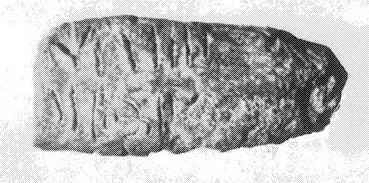
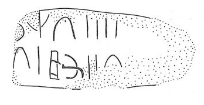

-
MA2b
Names
Aliases for the inscription.
MA2b, MA 2b
Support
Type of Object.
3-sided bar
Location
Site where object was found.
Malia
Findspot
Location at Site.
Unavailable


# "Row Index", "Line Index", "Word Index", "Syllabogram", "Status of Reading"
# R L W I S
# 1 0 1 PA certain
1 1 0 RE none
1 1 0 TI none
1 1 1 4 none
2 2 2 TI none
2 2 3 1 none
2 3 4 JA none
2 3 4 KU none
2 3 5 2 none
2 4 6 TI none
Scribe
Writer of Inscription.
Unavailable
Context
Approximate Date of Inscription.
Unavailable
Dimensions
Height x Length x Thickness.
Catalogue
Museum Reference Number.
Readings
Linear A Transcription
A Linear A transcription with words parsed separately.
Line breaks match the inscription.
𐘙𐘠𐄊
𐘠𐄇𐘱𐙂𐄈𐘠
ASCII Transcription
An ASCII transcription with words parsed separately.
Line breaks match the inscription.
RETI4
TI1JAKU2TI
Linear A Tabulation
A Linear A transcription with words parsed separately.
Line breaks are logical, e.g. to represent a list.
𐘙𐘠𐄊
𐘠𐄇
𐘱𐙂𐄈
𐘠
ASCII Tabulation
An ASCII transcription with words parsed separately.
Line breaks are logical, e.g. to represent a list.
RETI4
TI1
JAKU2
TI
Commentaries
MA 2
, 3-sided clay bar (HM 1394) (GORILA I: 270-271) (Palace room
III 8, MM III context)
|
side.line
|
statement
|
number
|
|
a.1
|
]DU-RA
|
5
|
|
|
a.2
|
vacat
|
|
|
|
|
|
|
b.1
|
]-RE-TI
|
4
|
|
b.2
|
]TI
|
1
|
|
b.2
|
JA-KU
|
2
|
|
b.2
|
TI
[
|
|
|
|
|
|
|
c.1
|
]-U-NA-NA
|
3
|
|
c.1
|
]JA-MA-U-TI
|
6
|
starting with side a, roll the bar up to get side b, and up again
to get side c (sides a and b are adjacent to each other; side b and c are
adjacent)
Commentary © John Younger
References
papers/GORILA-Vol1.pdf#page=306